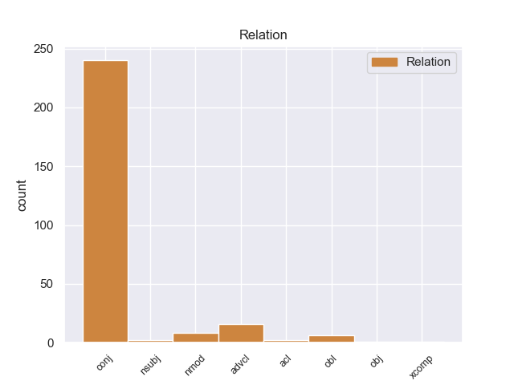
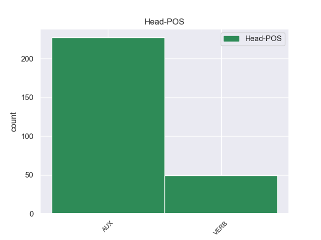
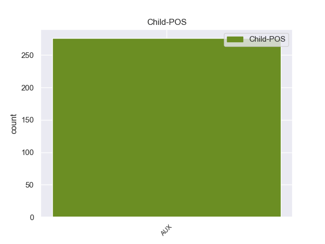

Distribution of features within this leaf



Agreement Rules sorted by frequency.
- When the dependent token is the conjunct(conj) of the head token, and the head token is AUX and the dependent token is AUX.
1 पत्रिका _ _ _ _ 0 _ _ _
2 के _ _ _ _ 0 _ _ _
3 अनुसार _ _ _ _ 0 _ _ _
4 खान _ _ _ _ 0 _ _ _
5 की _ _ _ _ 0 _ _ _
6 इन _ _ _ _ 0 _ _ _
7 यात्राओं _ _ _ _ 0 _ _ _
8 का _ _ _ _ 0 _ _ _
9 उद्देश्य _ _ _ _ 0 _ _ _
10 अभी _ _ _ _ 0 _ _ _
11 तक _ _ _ _ 0 _ _ _
12 स्पष्ट _ _ _ _ 0 _ _ _
13 नहीं _ _ _ _ 0 _ _ _
14 है _ _ _ _ 0 _ _ _
15 , _ _ _ _ 0 _ _ _
16 लेकिन _ _ _ _ 0 _ _ _
17 खुफिया _ _ _ _ 0 _ _ _
18 अधिकारियों _ _ _ _ 0 _ _ _
19 का _ _ _ _ 0 _ _ _
20 मानना _ _ _ _ 0 _ _ _
21 है _ _ _ _ 0 _ _ _
22 कि _ _ _ _ 0 _ _ _
23 सऊदी _ _ _ _ 0 _ _ _
24 अरब _ _ _ _ 0 _ _ _
25 और _ _ _ _ 0 _ _ _
26 मिस्र _ _ _ _ 0 _ _ _
27 परमाणु _ _ _ _ 0 _ _ _
28 तक़नीक _ _ _ _ 0 _ _ _
29 की _ _ _ _ 0 _ _ _
30 तलाश _ _ _ _ 0 _ _ _
31 में _ _ _ _ 0 _ _ _
32 हैं है AUX VM Mood=Ind|Number=Plur|Person=3|Tense=Pres|VerbForm=Fin|Voice=Act 0 _ _ _
33 और _ _ _ _ 0 _ _ _
34 कई _ _ _ _ 0 _ _ _
35 अफ्रीकी _ _ _ _ 0 _ _ _
36 देश _ _ _ _ 0 _ _ _
37 कच्चे _ _ _ _ 0 _ _ _
38 यूरेनियम _ _ _ _ 0 _ _ _
39 संपन्न _ _ _ _ 0 _ _ _
40 हैं है AUX VM Mood=Ind|Number=Plur|Person=3|Tense=Pres|VerbForm=Fin|Voice=Act 32 conj _ ChunkId=VGF4|ChunkType=head|Stype=declarative|Tam=hE|Translit=haiṁ|Vib=है
41 । _ _ _ _ 0 _ _ _
1 वोल्कर _ _ _ _ 0 _ _ _
2 ने _ _ _ _ 0 _ _ _
3 कहा _ _ _ _ 0 _ _ _
4 कि _ _ _ _ 0 _ _ _
5 उन्हें _ _ _ _ 0 _ _ _
6 यह _ _ _ _ 0 _ _ _
7 पता _ _ _ _ 0 _ _ _
8 नहीं _ _ _ _ 0 _ _ _
9 था _ _ _ _ 0 _ _ _
10 कि _ _ _ _ 0 _ _ _
11 १८ _ _ _ _ 0 _ _ _
12 महीने _ _ _ _ 0 _ _ _
13 लंबी _ _ _ _ 0 _ _ _
14 जाँच _ _ _ _ 0 _ _ _
15 से _ _ _ _ 0 _ _ _
16 इस _ _ _ _ 0 _ _ _
17 विश्वस्तरीय _ _ _ _ 0 _ _ _
18 संस्था _ _ _ _ 0 _ _ _
19 का _ _ _ _ 0 _ _ _
20 घोटाला _ _ _ _ 0 _ _ _
21 कहाँ _ _ _ _ 0 _ _ _
22 तक _ _ _ _ 0 _ _ _
23 खुलेगा खुल VERB VM Gender=Masc|Mood=Ind|Number=Sing|Person=3|Tense=Fut|VerbForm=Fin|Voice=Act 0 _ _ _
24 और _ _ _ _ 0 _ _ _
25 वह _ _ _ _ 0 _ _ _
26 इसके _ _ _ _ 0 _ _ _
27 नेता _ _ _ _ 0 _ _ _
28 महासचिव _ _ _ _ 0 _ _ _
29 कोफी _ _ _ _ 0 _ _ _
30 अन्नान _ _ _ _ 0 _ _ _
31 की _ _ _ _ 0 _ _ _
32 कुर्सी _ _ _ _ 0 _ _ _
33 हिलाने _ _ _ _ 0 _ _ _
34 के _ _ _ _ 0 _ _ _
35 इतने _ _ _ _ 0 _ _ _
36 नज़दीक _ _ _ _ 0 _ _ _
37 पहुँच _ _ _ _ 0 _ _ _
38 जाएंगे जा AUX VAUX Gender=Masc|Mood=Ind|Number=Sing|Person=3|Polite=Form|Tense=Fut|VerbForm=Fin 23 conj _ ChunkId=VGF4|ChunkType=child|Tam=gA|Translit=jāeṁge|Vib=गा
39 । _ _ _ _ 0 _ _ _
1 ७० _ _ _ _ 0 _ _ _
2 वर्षीय _ _ _ _ 0 _ _ _
3 इस _ _ _ _ 0 _ _ _
4 अहिंसावादी _ _ _ _ 0 _ _ _
5 तिब्बती _ _ _ _ 0 _ _ _
6 नेता _ _ _ _ 0 _ _ _
7 ने _ _ _ _ 0 _ _ _
8 यह _ _ _ _ 0 _ _ _
9 भी _ _ _ _ 0 _ _ _
10 कहा _ _ _ _ 0 _ _ _
11 कि _ _ _ _ 0 _ _ _
12 वे _ _ _ _ 0 _ _ _
13 चीन _ _ _ _ 0 _ _ _
14 से _ _ _ _ 0 _ _ _
15 अलगाव _ _ _ _ 0 _ _ _
16 की _ _ _ _ 0 _ _ _
17 बात _ _ _ _ 0 _ _ _
18 नहीं _ _ _ _ 0 _ _ _
19 कर _ _ _ _ 0 _ _ _
20 रहे _ _ _ _ 0 _ _ _
21 हैं है AUX VAUX Mood=Ind|Number=Sing|Person=3|Polite=Form|Tense=Pres|VerbForm=Fin 0 _ _ _
22 बल्कि _ _ _ _ 0 _ _ _
23 वे _ _ _ _ 0 _ _ _
24 तो _ _ _ _ 0 _ _ _
25 चीनी _ _ _ _ 0 _ _ _
26 संविधान _ _ _ _ 0 _ _ _
27 के _ _ _ _ 0 _ _ _
28 दायरे _ _ _ _ 0 _ _ _
29 में _ _ _ _ 0 _ _ _
30 ही _ _ _ _ 0 _ _ _
31 तिब्बत _ _ _ _ 0 _ _ _
32 समस्या _ _ _ _ 0 _ _ _
33 का _ _ _ _ 0 _ _ _
34 हल _ _ _ _ 0 _ _ _
35 चाहते _ _ _ _ 0 _ _ _
36 हैं है AUX VAUX Mood=Ind|Number=Sing|Person=3|Polite=Form|Tense=Pres|VerbForm=Fin 21 advcl _ ChunkId=VGF3|ChunkType=child|Tam=hE|Translit=haiṁ|Vib=है
37 । _ _ _ _ 0 _ _ _
1 फार्मा _ _ _ _ 0 _ _ _
2 कंपनियों _ _ _ _ 0 _ _ _
3 के _ _ _ _ 0 _ _ _
4 शेयर _ _ _ _ 0 _ _ _
5 ऑल _ _ _ _ 0 _ _ _
6 टाइम _ _ _ _ 0 _ _ _
7 फेवरिट _ _ _ _ 0 _ _ _
8 हैं है AUX VM Mood=Ind|Number=Plur|Person=3|Tense=Pres|VerbForm=Fin|Voice=Act 0 _ _ _
9 , _ _ _ _ 0 _ _ _
10 कुछ _ _ _ _ 0 _ _ _
11 बैंकों _ _ _ _ 0 _ _ _
12 के _ _ _ _ 0 _ _ _
13 शेयर _ _ _ _ 0 _ _ _
14 अब _ _ _ _ 0 _ _ _
15 भी _ _ _ _ 0 _ _ _
16 अंडर _ _ _ _ 0 _ _ _
17 वैल्यूड _ _ _ _ 0 _ _ _
18 हैं है AUX VM Mood=Ind|Number=Plur|Person=3|Tense=Pres|VerbForm=Fin|Voice=Act 8 nmod _ ChunkId=VGF2|ChunkType=head|SpaceAfter=No|Stype=declarative|Tam=hE|Translit=haiṁ|Vib=है
19 , _ _ _ _ 0 _ _ _
20 आप _ _ _ _ 0 _ _ _
21 उनमें _ _ _ _ 0 _ _ _
22 निवेश _ _ _ _ 0 _ _ _
23 करके _ _ _ _ 0 _ _ _
24 मुनाफा _ _ _ _ 0 _ _ _
25 वसूल _ _ _ _ 0 _ _ _
26 सकते _ _ _ _ 0 _ _ _
27 हैं _ _ _ _ 0 _ _ _
28 । _ _ _ _ 0 _ _ _
1 केन्द्र _ _ _ _ 0 _ _ _
2 से _ _ _ _ 0 _ _ _
3 दूसरे _ _ _ _ 0 _ _ _
4 दौर _ _ _ _ 0 _ _ _
5 की _ _ _ _ 0 _ _ _
6 वार्ता _ _ _ _ 0 _ _ _
7 की _ _ _ _ 0 _ _ _
8 संभावना _ _ _ _ 0 _ _ _
9 के _ _ _ _ 0 _ _ _
10 बारे _ _ _ _ 0 _ _ _
11 में _ _ _ _ 0 _ _ _
12 पूछे _ _ _ _ 0 _ _ _
13 जाने _ _ _ _ 0 _ _ _
14 पर _ _ _ _ 0 _ _ _
15 उन्होंने _ _ _ _ 0 _ _ _
16 कहा _ _ _ _ 0 _ _ _
17 कि _ _ _ _ 0 _ _ _
18 हुर्रियत _ _ _ _ 0 _ _ _
19 किसी _ _ _ _ 0 _ _ _
20 भी _ _ _ _ 0 _ _ _
21 समय _ _ _ _ 0 _ _ _
22 बातचीत _ _ _ _ 0 _ _ _
23 के _ _ _ _ 0 _ _ _
24 लिए _ _ _ _ 0 _ _ _
25 तैयार _ _ _ _ 0 _ _ _
26 है है VERB VM Mood=Ind|Number=Sing|Person=3|Tense=Pres|VerbForm=Fin|Voice=Act 0 _ _ _
27 हालांकि _ _ _ _ 0 _ _ _
28 मानवाधिकार _ _ _ _ 0 _ _ _
29 उल्लंघन _ _ _ _ 0 _ _ _
30 और _ _ _ _ 0 _ _ _
31 हिरासत _ _ _ _ 0 _ _ _
32 में _ _ _ _ 0 _ _ _
33 मौतों _ _ _ _ 0 _ _ _
34 के _ _ _ _ 0 _ _ _
35 मामले _ _ _ _ 0 _ _ _
36 में _ _ _ _ 0 _ _ _
37 अभी _ _ _ _ 0 _ _ _
38 बहुत _ _ _ _ 0 _ _ _
39 कुछ _ _ _ _ 0 _ _ _
40 नहीं _ _ _ _ 0 _ _ _
41 किया _ _ _ _ 0 _ _ _
42 गया _ _ _ _ 0 _ _ _
43 है है AUX VAUX Mood=Ind|Number=Sing|Person=3|Tense=Pres|VerbForm=Fin 26 advcl _ ChunkId=VGF3|ChunkType=child|Tam=hE|Translit=hai|Vib=है
44 । _ _ _ _ 0 _ _ _
1 इस _ _ _ _ 0 _ _ _
2 संबंध _ _ _ _ 0 _ _ _
3 में _ _ _ _ 0 _ _ _
4 औपचारिक _ _ _ _ 0 _ _ _
5 रूप _ _ _ _ 0 _ _ _
6 से _ _ _ _ 0 _ _ _
7 कोई _ _ _ _ 0 _ _ _
8 जांच _ _ _ _ 0 _ _ _
9 शुरू _ _ _ _ 0 _ _ _
10 नहीं _ _ _ _ 0 _ _ _
11 की _ _ _ _ 0 _ _ _
12 गई _ _ _ _ 0 _ _ _
13 है _ _ _ _ 0 _ _ _
14 लेकिन _ _ _ _ 0 _ _ _
15 भविष्य _ _ _ _ 0 _ _ _
16 में _ _ _ _ 0 _ _ _
17 क्या _ _ _ _ 0 _ _ _
18 कदम _ _ _ _ 0 _ _ _
19 उठाए _ _ _ _ 0 _ _ _
20 जाएंगे जा AUX VAUX Gender=Masc|Mood=Ind|Number=Plur|Person=3|Tense=Fut|VerbForm=Fin 0 _ _ _
21 , _ _ _ _ 0 _ _ _
22 इस _ _ _ _ 0 _ _ _
23 बारे _ _ _ _ 0 _ _ _
24 में _ _ _ _ 0 _ _ _
25 जल्द _ _ _ _ 0 _ _ _
26 फैसला _ _ _ _ 0 _ _ _
27 किया _ _ _ _ 0 _ _ _
28 जाएगा जा AUX VAUX Gender=Masc|Mood=Ind|Number=Sing|Person=3|Tense=Fut|VerbForm=Fin 20 acl _ ChunkId=VGF3|ChunkType=child|Tam=gA|Translit=jāegā|Vib=गा
29 । _ _ _ _ 0 _ _ _
1 बैठक _ _ _ _ 0 _ _ _
2 के _ _ _ _ 0 _ _ _
3 दौरान _ _ _ _ 0 _ _ _
4 श्रीलंका _ _ _ _ 0 _ _ _
5 की _ _ _ _ 0 _ _ _
6 तरफ़ _ _ _ _ 0 _ _ _
7 से _ _ _ _ 0 _ _ _
8 विदेश _ _ _ _ 0 _ _ _
9 मंत्री _ _ _ _ 0 _ _ _
10 लक्षमण _ _ _ _ 0 _ _ _
11 कादिरगमार _ _ _ _ 0 _ _ _
12 और _ _ _ _ 0 _ _ _
13 भारत _ _ _ _ 0 _ _ _
14 में _ _ _ _ 0 _ _ _
15 श्रीलंका _ _ _ _ 0 _ _ _
16 के _ _ _ _ 0 _ _ _
17 उच्चायुक्त _ _ _ _ 0 _ _ _
18 मंगल _ _ _ _ 0 _ _ _
19 मूनसिंघे _ _ _ _ 0 _ _ _
20 शामिल _ _ _ _ 0 _ _ _
21 थे था VERB VM Gender=Masc|Mood=Ind|Number=Plur|Tense=Past|VerbForm=Fin|Voice=Act 0 _ _ _
22 जबकि _ _ _ _ 0 _ _ _
23 मनमोहन _ _ _ _ 0 _ _ _
24 सिंह _ _ _ _ 0 _ _ _
25 के _ _ _ _ 0 _ _ _
26 साथ _ _ _ _ 0 _ _ _
27 विदेश _ _ _ _ 0 _ _ _
28 मंत्री _ _ _ _ 0 _ _ _
29 नटवर _ _ _ _ 0 _ _ _
30 सिंह _ _ _ _ 0 _ _ _
31 , _ _ _ _ 0 _ _ _
32 सुरक्षा _ _ _ _ 0 _ _ _
33 सलाहकार _ _ _ _ 0 _ _ _
34 जे. _ _ _ _ 0 _ _ _
35 एन. _ _ _ _ 0 _ _ _
36 दीक्षित _ _ _ _ 0 _ _ _
37 और _ _ _ _ 0 _ _ _
38 श्रीलंका _ _ _ _ 0 _ _ _
39 में _ _ _ _ 0 _ _ _
40 भारत _ _ _ _ 0 _ _ _
41 की _ _ _ _ 0 _ _ _
42 उच्चायुक्त _ _ _ _ 0 _ _ _
43 निरुपमा _ _ _ _ 0 _ _ _
44 राव _ _ _ _ 0 _ _ _
45 थे था AUX VM Gender=Masc|Mood=Ind|Number=Plur|Tense=Past|VerbForm=Fin|Voice=Act 21 obl _ ChunkId=VGF2|ChunkType=head|Stype=declarative|Tam=WA|Translit=the|Vib=था
46 । _ _ _ _ 0 _ _ _
1 बताया _ _ _ _ 0 _ _ _
2 जाता _ _ _ _ 0 _ _ _
3 है है AUX VAUX Mood=Ind|Number=Sing|Person=3|Tense=Pres|VerbForm=Fin 0 _ _ _
4 इसमें _ _ _ _ 0 _ _ _
5 उनके _ _ _ _ 0 _ _ _
6 मंत्रिमंडल _ _ _ _ 0 _ _ _
7 के _ _ _ _ 0 _ _ _
8 सहयोगी _ _ _ _ 0 _ _ _
9 साथियों _ _ _ _ 0 _ _ _
10 की _ _ _ _ 0 _ _ _
11 खासी _ _ _ _ 0 _ _ _
12 अहम _ _ _ _ 0 _ _ _
13 भूमिका _ _ _ _ 0 _ _ _
14 है है AUX VM Mood=Ind|Number=Sing|Person=3|Tense=Pres|VerbForm=Fin|Voice=Act 3 obj _ ChunkId=VGF2|ChunkType=head|Stype=declarative|Tam=hE|Translit=hai|Vib=है
15 । _ _ _ _ 0 _ _ _
1 जहां _ _ _ _ 0 _ _ _
2 तक _ _ _ _ 0 _ _ _
3 इन _ _ _ _ 0 _ _ _
4 उपकरणों _ _ _ _ 0 _ _ _
5 की _ _ _ _ 0 _ _ _
6 कीमत _ _ _ _ 0 _ _ _
7 की _ _ _ _ 0 _ _ _
8 बात _ _ _ _ 0 _ _ _
9 है है AUX VM Mood=Ind|Number=Sing|Person=3|Tense=Pres|VerbForm=Fin|Voice=Act 24 obl _ ChunkId=VGF|ChunkType=head|Stype=declarative|Tam=hE|Translit=hai|Vib=है
10 तो _ _ _ _ 0 _ _ _
11 ये _ _ _ _ 0 _ _ _
12 आकार _ _ _ _ 0 _ _ _
13 के _ _ _ _ 0 _ _ _
14 अनुसार _ _ _ _ 0 _ _ _
15 350 _ _ _ _ 0 _ _ _
16 से _ _ _ _ 0 _ _ _
17 लेकर _ _ _ _ 0 _ _ _
18 2000 _ _ _ _ 0 _ _ _
19 रुपये _ _ _ _ 0 _ _ _
20 तक _ _ _ _ 0 _ _ _
21 में _ _ _ _ 0 _ _ _
22 उपलब्ध _ _ _ _ 0 _ _ _
23 होते _ _ _ _ 0 _ _ _
24 हैं है AUX VAUX Mood=Ind|Number=Plur|Person=3|Tense=Pres|VerbForm=Fin 0 _ _ _
25 । _ _ _ _ 0 _ _ _
1 इस _ _ _ _ 0 _ _ _
2 मामले _ _ _ _ 0 _ _ _
3 में _ _ _ _ 0 _ _ _
4 क्या _ _ _ _ 0 _ _ _
5 कार्रवाई _ _ _ _ 0 _ _ _
6 होगी हो VERB VM Gender=Fem|Mood=Ind|Number=Sing|Person=3|Tense=Fut|VerbForm=Fin|Voice=Act 0 _ _ _
7 यह _ _ _ _ 0 _ _ _
8 बात _ _ _ _ 0 _ _ _
9 गुजरात _ _ _ _ 0 _ _ _
10 हाईकोर्ट _ _ _ _ 0 _ _ _
11 की _ _ _ _ 0 _ _ _
12 बृहस्पतिवार _ _ _ _ 0 _ _ _
13 को _ _ _ _ 0 _ _ _
14 होने _ _ _ _ 0 _ _ _
15 वाली _ _ _ _ 0 _ _ _
16 सुनवाई _ _ _ _ 0 _ _ _
17 के _ _ _ _ 0 _ _ _
18 बाद _ _ _ _ 0 _ _ _
19 ही _ _ _ _ 0 _ _ _
20 सामने _ _ _ _ 0 _ _ _
21 आ _ _ _ _ 0 _ _ _
22 पाएगी पा AUX VAUX Gender=Fem|Mood=Ind|Number=Sing|Person=3|Tense=Fut|VerbForm=Fin 6 xcomp _ ChunkId=VGF2|ChunkType=child|Tam=gA|Translit=pāegī|Vib=गा
23 । _ _ _ _ 0 _ _ _
Disagree Examples:
1 यहाँ _ _ _ _ 0 _ _ _
2 की _ _ _ _ 0 _ _ _
3 गलियों _ _ _ _ 0 _ _ _
4 में _ _ _ _ 0 _ _ _
5 भटकते _ _ _ _ 0 _ _ _
6 हुए _ _ _ _ 0 _ _ _
7 आपको _ _ _ _ 0 _ _ _
8 महसूस _ _ _ _ 0 _ _ _
9 होगा हो VERB VM Gender=Masc|Mood=Ind|Number=Sing|Person=3|Tense=Fut|VerbForm=Fin|Voice=Act 0 _ _ _
10 फ्रेंच _ _ _ _ 0 _ _ _
11 लोगों _ _ _ _ 0 _ _ _
12 का _ _ _ _ 0 _ _ _
13 पूरा _ _ _ _ 0 _ _ _
14 जीवन _ _ _ _ 0 _ _ _
15 कला _ _ _ _ 0 _ _ _
16 के _ _ _ _ 0 _ _ _
17 लिए _ _ _ _ 0 _ _ _
18 समर्पित _ _ _ _ 0 _ _ _
19 है है AUX VM Mood=Ind|Number=Sing|Person=3|Tense=Pres|VerbForm=Fin|Voice=Act 9 nsubj _ ChunkId=VGF2|ChunkType=head|Stype=declarative|Tam=hE|Translit=hai|Vib=है
20 । _ _ _ _ 0 _ _ _
1 इन _ _ _ _ 0 _ _ _
2 तीनों _ _ _ _ 0 _ _ _
3 का _ _ _ _ 0 _ _ _
4 संबंध _ _ _ _ 0 _ _ _
5 राजस्थान _ _ _ _ 0 _ _ _
6 के _ _ _ _ 0 _ _ _
7 चित्तौड़ _ _ _ _ 0 _ _ _
8 से _ _ _ _ 0 _ _ _
9 है है AUX VM Mood=Ind|Number=Sing|Person=3|Tense=Pres|VerbForm=Fin|Voice=Act 0 _ _ _
10 और _ _ _ _ 0 _ _ _
11 ये _ _ _ _ 0 _ _ _
12 तीनों _ _ _ _ 0 _ _ _
13 चित्तौड़ _ _ _ _ 0 _ _ _
14 के _ _ _ _ 0 _ _ _
15 किले _ _ _ _ 0 _ _ _
16 में _ _ _ _ 0 _ _ _
17 निवास _ _ _ _ 0 _ _ _
18 करते _ _ _ _ 0 _ _ _
19 थे था AUX VAUX Gender=Masc|Mood=Ind|Number=Plur|Tense=Past|VerbForm=Fin 9 conj _ ChunkId=VGF2|ChunkType=child|Tam=WA|Translit=the|Vib=था
20 । _ _ _ _ 0 _ _ _
1 सुदर्शन _ _ _ _ 0 _ _ _
2 ने _ _ _ _ 0 _ _ _
3 कहा _ _ _ _ 0 _ _ _
4 कि _ _ _ _ 0 _ _ _
5 संघ _ _ _ _ 0 _ _ _
6 बेशक _ _ _ _ 0 _ _ _
7 देश _ _ _ _ 0 _ _ _
8 को _ _ _ _ 0 _ _ _
9 हिंदू _ _ _ _ 0 _ _ _
10 राष्ट्र _ _ _ _ 0 _ _ _
11 बनाने _ _ _ _ 0 _ _ _
12 के _ _ _ _ 0 _ _ _
13 लिए _ _ _ _ 0 _ _ _
14 संघर्ष _ _ _ _ 0 _ _ _
15 कर _ _ _ _ 0 _ _ _
16 रहा _ _ _ _ 0 _ _ _
17 है है AUX VAUX Mood=Ind|Number=Sing|Person=3|Tense=Pres|VerbForm=Fin 0 _ _ _
18 पर _ _ _ _ 0 _ _ _
19 स्वतंत्रता _ _ _ _ 0 _ _ _
20 आंदोलन _ _ _ _ 0 _ _ _
21 में _ _ _ _ 0 _ _ _
22 स्वयंसेवकों _ _ _ _ 0 _ _ _
23 ने _ _ _ _ 0 _ _ _
24 व्यक्तिगत _ _ _ _ 0 _ _ _
25 तौर _ _ _ _ 0 _ _ _
26 पर _ _ _ _ 0 _ _ _
27 शामिल _ _ _ _ 0 _ _ _
28 होकर _ _ _ _ 0 _ _ _
29 संघर्ष _ _ _ _ 0 _ _ _
30 किया _ _ _ _ 0 _ _ _
31 था था AUX VAUX Gender=Masc|Mood=Ind|Number=Sing|Tense=Past|VerbForm=Fin 17 conj _ ChunkId=VGF3|ChunkType=child|Tam=WA|Translit=thā|Vib=था
32 । _ _ _ _ 0 _ _ _
1 तमन्ना _ _ _ _ 0 _ _ _
2 तो _ _ _ _ 0 _ _ _
3 थी था AUX VM Gender=Fem|Mood=Ind|Number=Sing|Tense=Past|VerbForm=Fin|Voice=Act 0 _ _ _
4 , _ _ _ _ 0 _ _ _
5 लेकिन _ _ _ _ 0 _ _ _
6 दोनों _ _ _ _ 0 _ _ _
7 मुल्कों _ _ _ _ 0 _ _ _
8 की _ _ _ _ 0 _ _ _
9 दूरियों _ _ _ _ 0 _ _ _
10 ने _ _ _ _ 0 _ _ _
11 हमें _ _ _ _ 0 _ _ _
12 दूर _ _ _ _ 0 _ _ _
13 रखा _ _ _ _ 0 _ _ _
14 है है AUX VAUX Mood=Ind|Number=Sing|Person=3|Tense=Pres|VerbForm=Fin 3 conj _ ChunkId=VGF2|ChunkType=child|Tam=hE|Translit=hai|Vib=है
15 । _ _ _ _ 0 _ _ _
1 शामलाल _ _ _ _ 0 _ _ _
2 के _ _ _ _ 0 _ _ _
3 अनुसार _ _ _ _ 0 _ _ _
4 उसका _ _ _ _ 0 _ _ _
5 धंधा _ _ _ _ 0 _ _ _
6 एकदम _ _ _ _ 0 _ _ _
7 चौपट _ _ _ _ 0 _ _ _
8 हो _ _ _ _ 0 _ _ _
9 गया _ _ _ _ 0 _ _ _
10 था _ _ _ _ 0 _ _ _
11 और _ _ _ _ 0 _ _ _
12 उसने _ _ _ _ 0 _ _ _
13 बच्चों _ _ _ _ 0 _ _ _
14 को _ _ _ _ 0 _ _ _
15 इस _ _ _ _ 0 _ _ _
16 पुश्तैनी _ _ _ _ 0 _ _ _
17 धंधे _ _ _ _ 0 _ _ _
18 को _ _ _ _ 0 _ _ _
19 छोड़ने _ _ _ _ 0 _ _ _
20 तक _ _ _ _ 0 _ _ _
21 की _ _ _ _ 0 _ _ _
22 सलाह _ _ _ _ 0 _ _ _
23 दे _ _ _ _ 0 _ _ _
24 दी _ _ _ _ 0 _ _ _
25 थी था AUX VAUX Gender=Fem|Mood=Ind|Number=Sing|Tense=Past|VerbForm=Fin 0 _ _ _
26 लेकिन _ _ _ _ 0 _ _ _
27 रेल _ _ _ _ 0 _ _ _
28 मंत्री _ _ _ _ 0 _ _ _
29 की _ _ _ _ 0 _ _ _
30 घोषणा _ _ _ _ 0 _ _ _
31 कुम्हार _ _ _ _ 0 _ _ _
32 समुदाय _ _ _ _ 0 _ _ _
33 के _ _ _ _ 0 _ _ _
34 लिए _ _ _ _ 0 _ _ _
35 आशा _ _ _ _ 0 _ _ _
36 की _ _ _ _ 0 _ _ _
37 नई _ _ _ _ 0 _ _ _
38 किरण _ _ _ _ 0 _ _ _
39 लेकर _ _ _ _ 0 _ _ _
40 आई _ _ _ _ 0 _ _ _
41 है है AUX VAUX Mood=Ind|Number=Sing|Person=3|Tense=Pres|VerbForm=Fin 25 conj _ ChunkId=VGF3|ChunkType=child|Tam=hE|Translit=hai|Vib=है
42 । _ _ _ _ 0 _ _ _